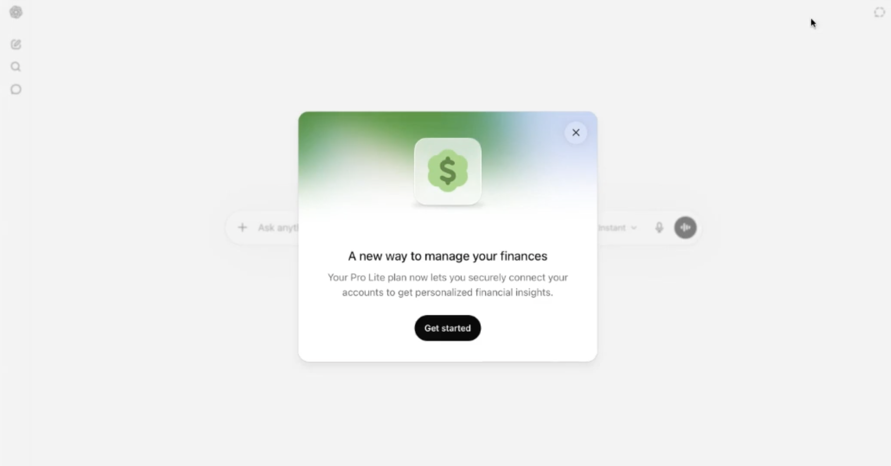
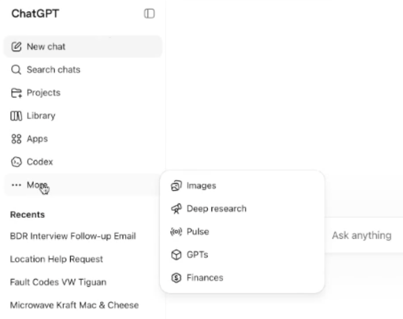
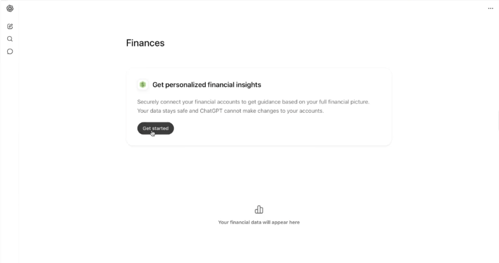
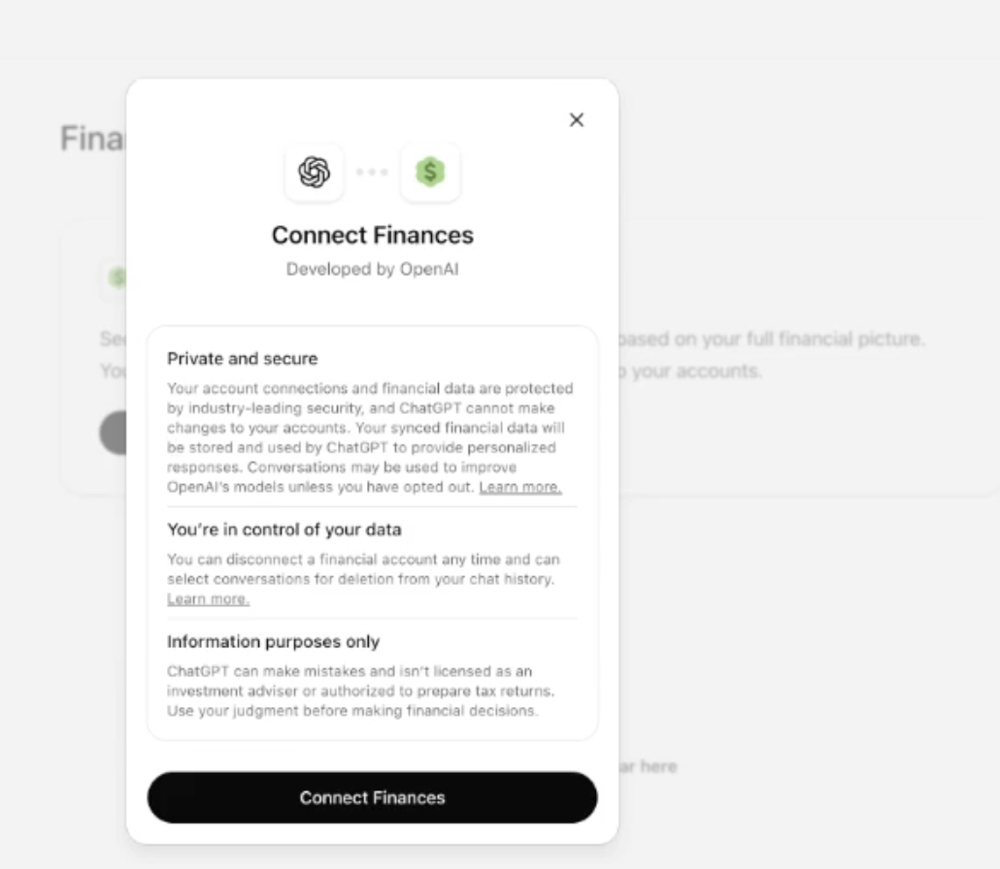
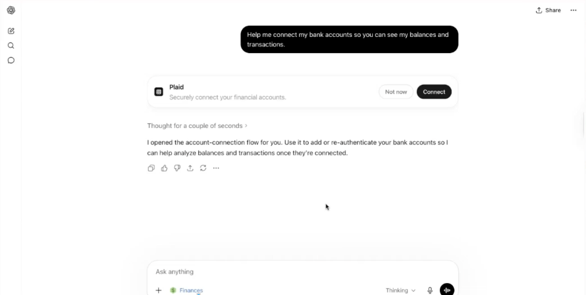
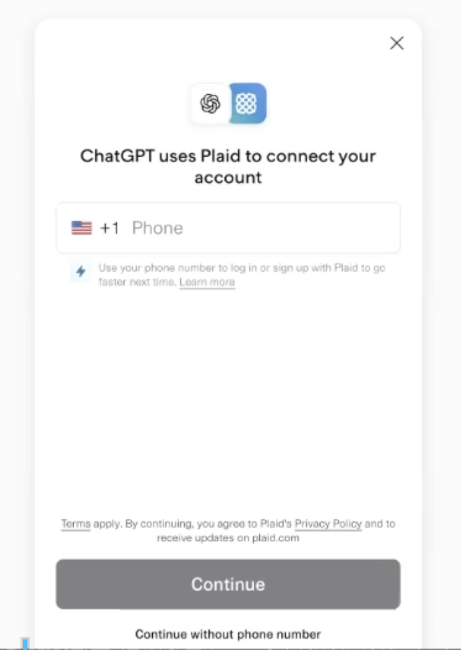

Hallazgos observados para Banco Sabadell · conexión real activa · foco en calidad de datos, capacidades y posicionamiento de bancos españoles
ChatGPT Finanzas Personales ya está conectado a una cuenta bancaria real y puede consultarse de nuevo cuando sea necesario para ampliar pruebas, repetir prompts o validar cambios del producto. OpenAI lo presenta oficialmente como una preview para usuarios Pro en EE. UU., desplegada gradualmente para aprender del uso real y mejorar la experiencia.
La conexión bancaria es sencilla y la experiencia conversacional es fluida: resume gasto, deuda, ahorro, presupuesto, inversión y bancos españoles.
El hallazgo crítico no es conversacional, sino factual. En la prueba, el saldo de una cuenta corriente no coincidía con el saldo real del banco; incluso tras refrescar, ChatGPT mantuvo el dato incorrecto y recomendó usar la app bancaria como fuente de verdad.
Conclusión operativa: hoy funciona como capa de interpretación y explicación, pero no como fuente fiable para decisiones financieras sensibles mientras balances, sincronización y cobertura histórica no sean consistentes.
El análisis parte de un caso de uso real: una cuenta de ChatGPT con acceso a la funcionalidad de finanzas personales en EE. UU., conectada a cuentas bancarias mediante Plaid. Según OpenAI, no se trata todavía de un producto plenamente generalizado: es una experiencia en preview para usuarios Pro en Estados Unidos, con despliegue gradual. La prueba permite observar tanto el proceso de conexión como la calidad de las respuestas una vez ChatGPT tiene acceso a datos financieros del usuario.
La conversación analizada cubre cuatro bloques principales:
La conexión bancaria se percibe como sencilla. El proceso de vinculación mediante Plaid no parece ser una barrera significativa para un usuario acostumbrado a conectar cuentas a apps financieras. Una vez conectadas las cuentas, ChatGPT puede empezar a razonar sobre saldos, deuda, gasto y objetivos financieros en lenguaje natural.
Secuencia de pantallas desde la invitación inicial hasta el paso de Plaid para conectar la cuenta.






Este es el punto más importante de la prueba. En la conversación, el usuario señaló que el saldo de la cuenta corriente conectada no parecía correcto. Tras revisar y refrescar la conexión, el dato siguió sin cuadrar con el saldo real.
El propio sistema termino indicando que, para esa cuenta, debia usarse la app bancaria como fuente de verdad. Este comportamiento reduce el valor de ChatGPT como agregador financiero: puede explicar bien, pero no puede sostener una recomendación si el dato de base no es fiable.
| Elemento observado | Resultado | Implicacion |
|---|---|---|
| Balance conectado | No coincidía con el saldo actual mostrado por la entidad bancaria. | Riesgo factual alto. |
| Refresco de datos | Tras refrescar, ChatGPT mantuvo la misma información incorrecta. | Sincronizacion insuficiente en la prueba. |
| Respuesta del asistente | Respondió a la inconsistencia señalada por el usuario y recomendó usar la app bancaria. | El banco conserva el rol de fuente de verdad. |
La herramienta no pareció cargar toda la información financiera de golpe ni ofrecer una vista completa y estable de más de un mes de actividad. El análisis se centro principalmente en el mes en curso y en categorías recientes.
Esta limitacion afecta a varios usos que un cliente esperaria de una herramienta de finanzas personales:
Funciona a un nivel útil pero básico. Agrupa gasto en categorías como vivienda, compras, transporte, restauración, salud, alimentación o suscripciones.
Las respuestas son razonables y fáciles de entender, pero todavía poco accionables. La herramienta recomienda, estructura y explica; no ejecuta acciones ni demuestra precisión suficiente para delegar decisiones.
La conversación muestra primero un comportamiento general: ChatGPT no introduce bancos ni entidades financieras como recomendación si el usuario no lo pregunta de forma específica. Puede mencionar entidades cuando forman parte del contexto o de la pregunta, pero no parece convertir una consulta financiera genérica en una recomendación bancaria espontánea.
Cuando el usuario pregunta de forma concreta por bancos españoles o por España, ChatGPT da recomendaciones claras, comparativas y rankings explícitos.
| Entidad o grupo | Posicionamiento observado | Lectura para Sabadell |
|---|---|---|
| BBVA | Aparece como recomendación preferida por defecto para una cuenta principal en España. | Principal competidor en recomendación general. |
| Banco Sabadell | Aparece como alternativa sólida, especialmente si la pareja o familia ya usa el banco, si se valora banca tradicional, oficinas o experiencia con clientes internacionales. | Presencia positiva, pero no primera opción general. |
| Santander / CaixaBank | Aparecen como opciones de red amplia, con advertencias sobre comisiones o condiciones. | Comparables en banca tradicional, con cautelas. |
| Wise / Revolut | Aparecen como complementos para mover USD a EUR, no como banco principal para vida financiera local. | Competencia funcional en cambio/divisa, no sustituto completo. |
Se recomienda mantener la cuenta conectada y repetir pruebas de forma periódica. Las siguientes validaciones están directamente vinculadas a las limitaciones observadas:
| Prueba | Qué validar |
|---|---|
| Refresco de balances | Comprobar si los saldos se actualizan correctamente tras 1 hora, 6 horas, 24 horas y varios días. |
| Carga histórica | Validar cuántos meses de transacciones puede leer realmente y si el análisis mejora con más historial. |
| Tipo de cuenta | Comparar precisión en cuenta corriente, ahorro, tarjeta de crédito, prestamo e inversiónes. |
| Clasificación | Revisar si aprende de correcciones o si mantiene categorías genéricas. |
| Prompts bancarios | Repetir comparativas con BBVA, Santander, CaixaBank, Bankinter, Openbank, N26, Revolut, Wise y Banco Sabadell. |
| Accionabilidad | Comprobar si pasa de aconsejar a guiar acciones concretas, presupuestos exportables o simulaciones verificables. |
ChatGPT Finanzas Personales muestra una propuesta atractiva: convierte datos financieros en una conversación comprensible y personalizada. Para un usuario, reduce fricción y hace más fácil hablar de dinero, presupuesto, deuda, ahorro e inversión.
Pero la prueba evidencia una limitación crítica: la herramienta no puede considerarse fiable si los balances conectados no coinciden con la realidad bancaria. Mientras la sincronización y la cobertura de datos no sean consistentes, ChatGPT será útil como intérprete o asistente, pero no como fuente de verdad financiera.